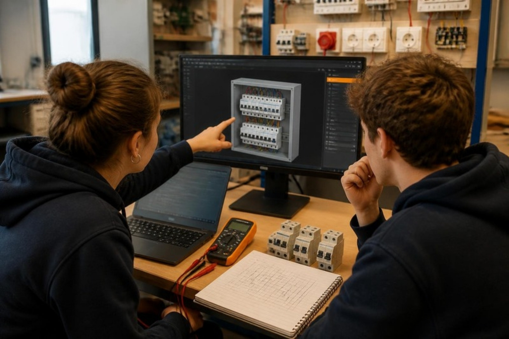
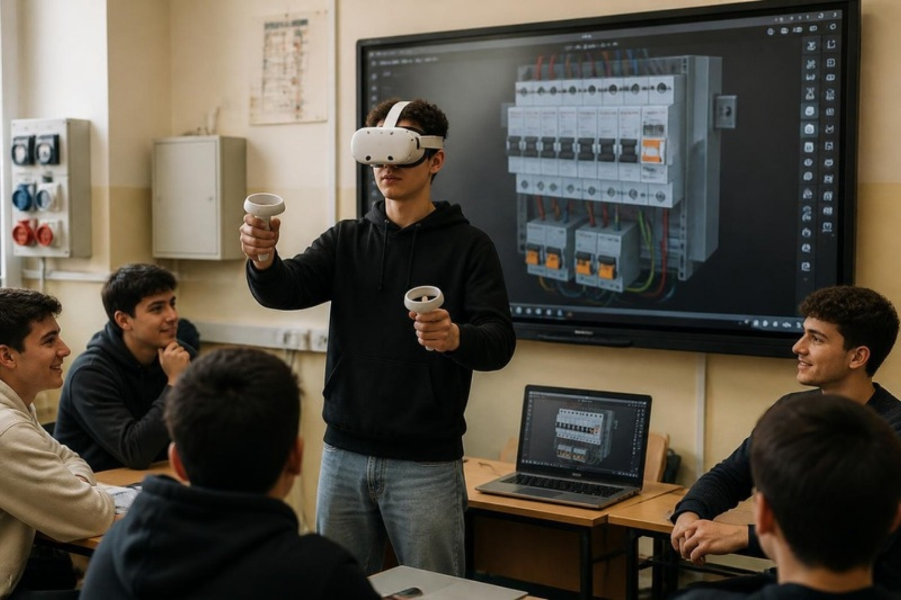

Configuratore 3D di
impianti e quadri elettrici.
Un laboratorio didattico in 3D per lo studio dei quadri, delle protezioni e degli impianti: si monta, si cabla, si dà corrente e si osserva che cosa succede.
Un laboratorio digitale per gli impianti elettrici
Il docente propone un’esercitazione e guida gli studenti nella configurazione di un quadro: scelta delle protezioni, cablaggio, prova di funzionamento. Il configuratore simula davvero la corrente, controlla le verifiche normative e raccoglie le scelte in una scheda tecnica da presentare in classe.
- 1
Configurazione del quadro
Si montano i componenti sulle guide DIN e sul pannello utenze e si collegano i morsetti; i cavi seguono le canaline con colori e sezioni normalizzati.
- 2
Simulazione e misure
Si dà corrente e si osserva l’impianto: tensioni, correnti, interventi delle protezioni, guasti a terra. Multimetro e pinza amperometrica per le misure, verifiche automatiche sulle scelte.
- 3
Verifica e presentazione
Lo studente giustifica le scelte, genera la scheda tecnica e presenta la configurazione alla classe sulla LIM. In VR si entra nel laboratorio dal browser del visore.
Inizia da qui
Scegli il tutorial per chi parte da zero, il laboratorio completo o una delle esercitazioni della scheda.

Tutorial guidato
Nove lezioni brevi, una spiegazione alla volta: il punto da cliccare è evidenziato e ogni passo viene controllato. Tre sono a bordo di una nave, l’ultima in una cabina MT/BT.
Apri il tutorial ↗
Laboratorio completo
Il configuratore libero: 31 componenti, cablaggio, simulazione, verifiche, scheda tecnica. Sul PC o con il visore.
Entra nel laboratorio ↗Esercitazioni in classe
Le cinque esercitazioni della scheda del laboratorio, dall’impianto base alla presentazione, con passi verificati in automatico.
Scegli un’esercitazione ↗I progetti restano sul dispositivo e si possono salvare come file. Per la realtà virtuale si apre lo stesso indirizzo dal browser del visore Meta Quest.